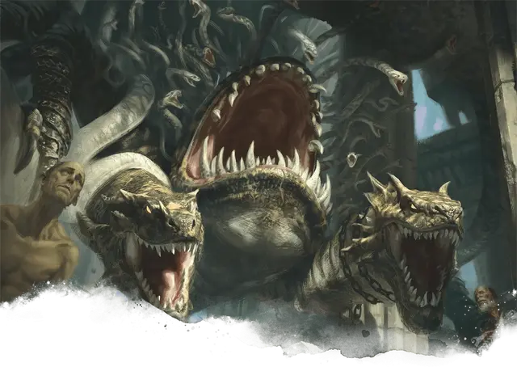

Тифон
Typhon
Огромный Монстр, хаотично-злой

Класс Доспеха 17 (природный доспех)
Хиты 195 (17к12 + 85)
Скорость 40 футов
| мод | спас | ||
|---|---|---|---|
| СИЛ | 24 | +7 | +7 |
| ЛОВ | 10 | +0 | +0 |
| ТЕЛ | 20 | +5 | +10 |
| мод | спас | ||
|---|---|---|---|
| ИНТ | 7 | −2 | −2 |
| МДР | 12 | +1 | +1 |
| ХАР | 13 | +1 | +1 |
Иммунитет к урону кислота, некротическая энергия
Чувства тёмное зрение 120 футов, пассивное Восприятие 11
Языки Общий
Опасность 15 (13000 опыта)
Бонус мастерства +5
Особенности
Тонкий нюх. Тифон совершает с преимуществом проверки Мудрости (Восприятие), полагающиеся на обоняние.
Регенерация. Тифон восстанавливает 20 хитов в начале своего хода. Если тифон получает урон излучением, то эта особенность не действует в начале его следующего хода. Тифон умирает только если начинает ход с 0 хитов и не может регенерировать.
Действия
Мультиатака. Тифон совершает три атаки: одну Шквалом укусов, одну Сжиманием, и одну своей Пастью.
Шквал укусов. Рукопашная атака оружием: +12 к попаданию, досягаемость 10 футов, одна цель. Попадание: 35 (8к6 + 7) колющего урона.
Сжимание. . Рукопашная атака оружием: +12 к попаданию, досягаемость 15 футов, одно существо Большого размера или меньше. Попадание: 17 (3к6 + 7) дробящего урона, и цель становится схвачена (Сл высвобождения 19). Пока этот захват не окончится, цель так же опутана и получает 17 (3к6 + 7) дробящего урона в начале каждого своего хода. Одновременно тифон может держать в захвате до двух существ.
Пасть. . Рукопашная атака оружием: +12 к попаданию, досягаемость 10 футов, одна цель. Попадание: 26 (3к12 + 7) колющего урона плюс 19 (3к12) урона кислотой.
Описание
Титанический ужас из корчащейся плоти и скрежещущих пастей, тифоны скользят по Подземному царству, стремясь только пожирать. Когда-то души смертных военачальников и жестоких тиранов - тифоны появляются на свет через века накапливающейся горечи и ярости. Со временем эти души превращаются в вечно голодных чудовищ, которые бесчинствуют в царстве мертвых, пожирая души тысячами. Однако Подземное царство остаётся их тюрьмой, и большинство из них не хотели бы ничего больше, чем сбежать и снова убивать живых.